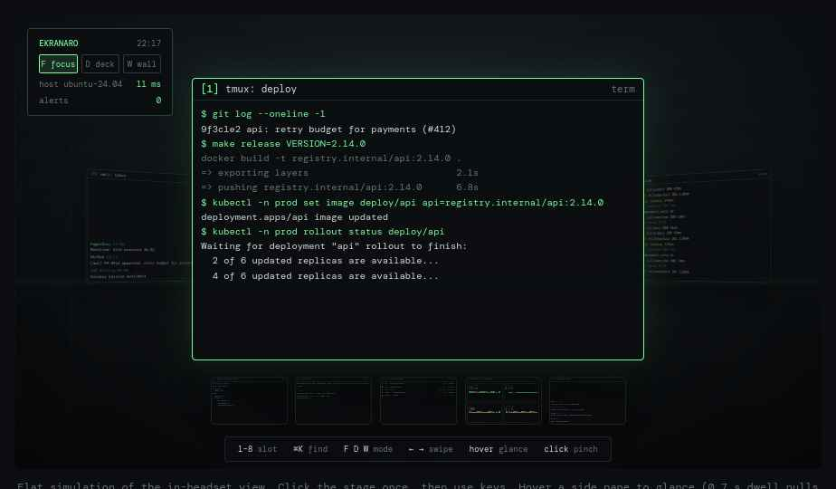
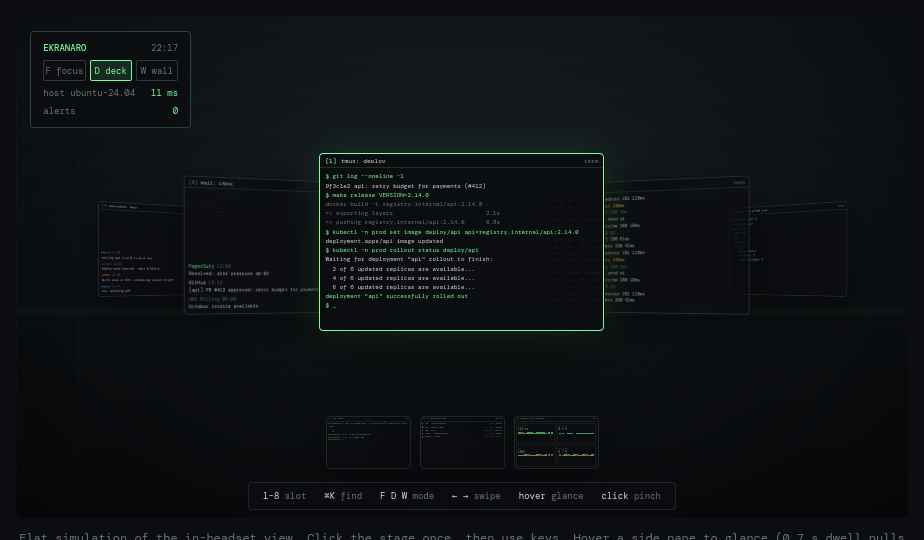

Ekranaro
A cockpit of screens for DevOps work, on Meta Quest 3.
ekran·aro — Esperanto, “a set of screens”

The ops workday: many small windows, one pair of eyes
Alt-tab, tmux prefixes and workspace hotkeys exist because the glass is too small. A headset removes the glass limit, but current VR desktops only give you bigger glass.
Existing VR desktops and where they stop
Immersed: Linux virtual displays only on GNOME Wayland. WayVR and Stardust XR need a PC-side OpenXR runtime (Monado/WiVRn) and have no notion of ops workflows.
The gap: monitors in space, not workflows in space
Concept: windows, slots and three modes
Windows, not monitors. Each Ubuntu window is captured on its own and becomes a slot [1]…[9].
Three modes, same slots. Focus, Deck and Wall rearrange the slots around you. Nothing is lost between modes.
Alerts find you. A slot can turn red from a log line, a CI result or a dashboard threshold, in any mode.
Native panels where streaming is wasteful. CI board and alert feed render in the headset from APIs, not from pixels.
Focus mode
- ›One window at full reading size, straight ahead
- ›Previous and next slot angled at the sides, live but dimmed
- ›Remaining slots in a numbered dock below
- ›Physical keyboard visible through passthrough

Deck mode
- ›Five slots in an arc, all readable without turning the head far
- ›Swipe or arrow keys rotate the deck one slot
- ›Meant for rollouts: deploy, logs, dashboard, CI, chat side by side

Wall mode
- ›Every slot visible at once on a curved wall
- ›Quiet tiles dimmed; alerting tiles at full brightness with a red frame
- ›Alert sources: log patterns, CI results, dashboard thresholds, chat mentions
- ›Pinch an alerting tile to acknowledge it and drop into Focus
Switching in under a second
Architecture: Ubuntu host agent and Quest client
No PC-side VR runtime. The host only streams windows and data; all spatial logic runs on the headset.
Open stack choices
Roadmap
How to contribute
Two repos, one spec. The slot and mode model is a small protocol document, so clients for other headsets and agents for other desktops can follow.